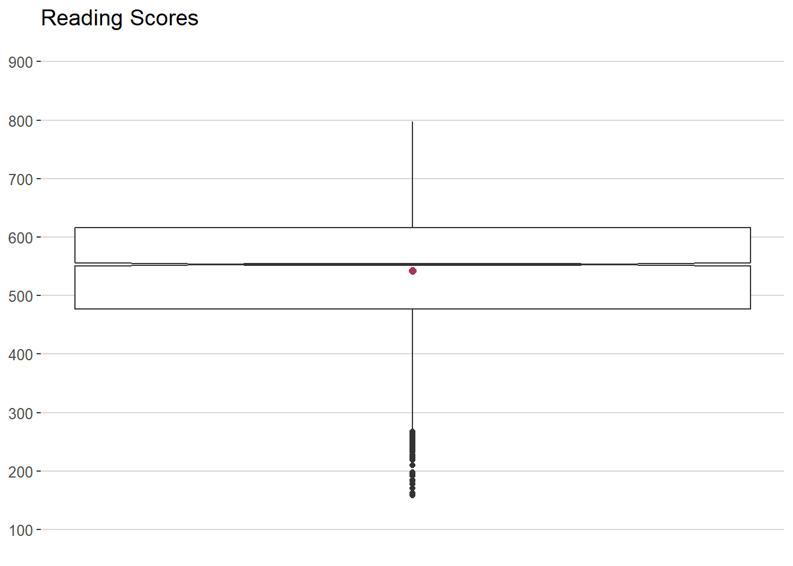
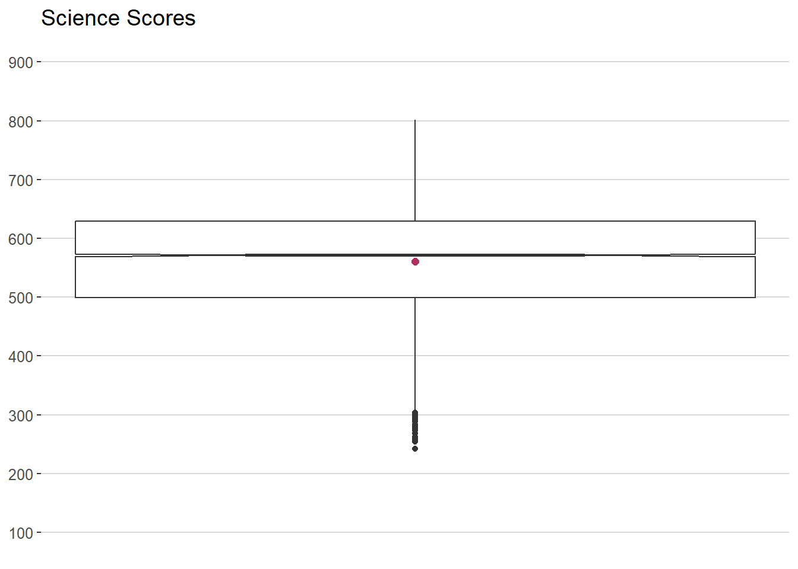
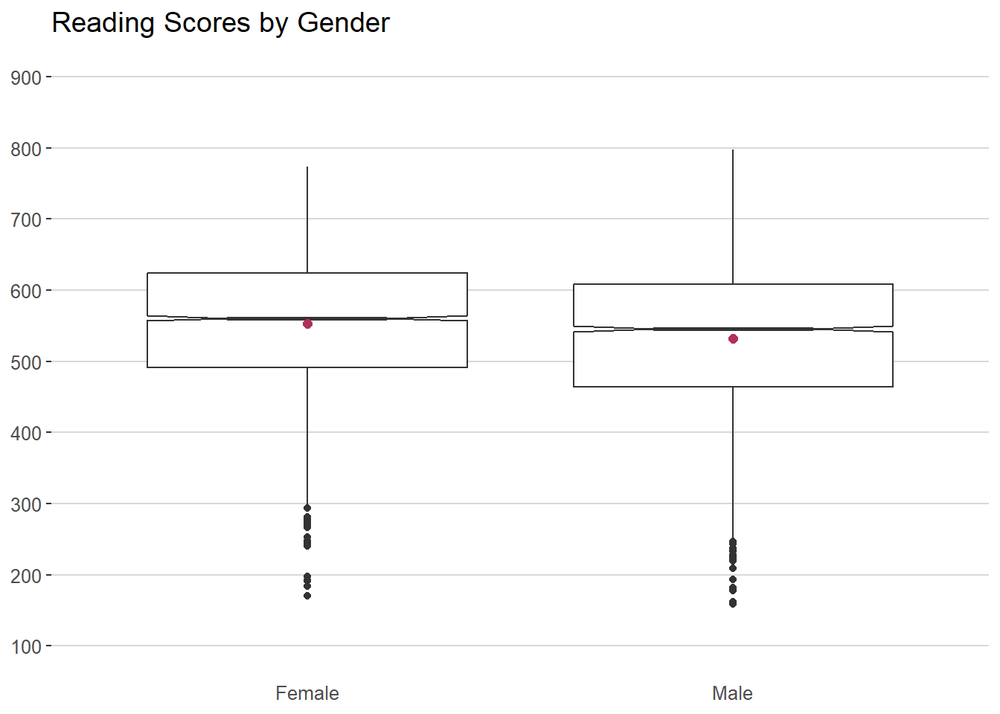
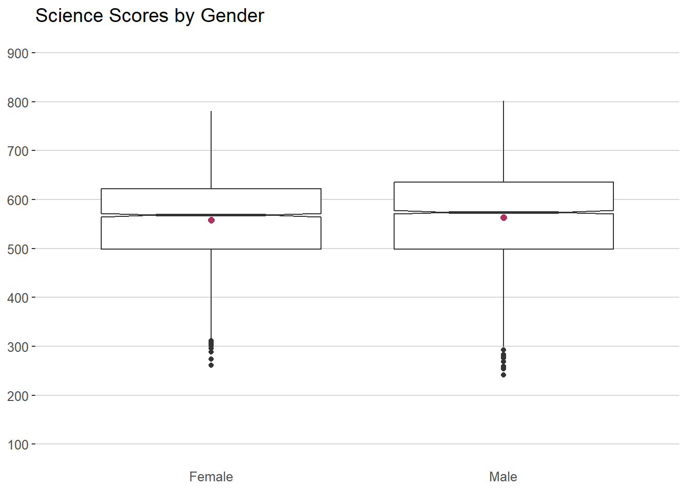

pacman::p_load(tidyverse,haven,ggplot2,patchwork,ggrepel,ggthemes,hrbrthemes)Take-home Exercise 1: Creating Data Visualization Beyond Default
Project Brief
Although Singapore has reportedly achieved a high level of education between all schools in the country, there remains a strong belief within the country that disparities still exist within the educational system. Differing factors such as being an elite or neighborhood school, socioeconomic status, gender, and many other factors may still play a vital role in a student’s educational quality.
Project Objectives
Using the 2022 Programme for International Student Assessment (PISA) data, the researcher is expected to use Exploratory Data Analysis (EDA) methods and ggplot2 functions to reveal:
student performance in math, reading, and science, and
relationships between the aforementioned grades with their schools, gender, and socioeconomic status.
1: Data Preparation
1.1: Installing R Packages
In this task, three R packages will be used. They are:
The code chunk used is as follows:
1.2: Data Sets
The code chunk below uses ‘read_sas()’ of haven to import the PISA data into the R environment.
stu_qqq <- read_sas("data/cy08msp_stu_qqq.sas7bdat")The data can then be limited to contain only Singaporean students using the following code chunks.
stu_qqq_SG <- stu_qqq %>%
filter(CNT == "SGP")write_rds(stu_qqq_SG,
"data/stu_qqq_SG.rds")stu_qqq_SG <- read_rds("data/stu_qqq_SG.rds")Given that the data was restricted to only Singaporean students, numerous columns have uniform values. These columns do not provide any useful information to the task at hand and can thus be filtered out using the code chunks below.
library(dplyr)
stu_qqq_SG_filtered <- stu_qqq_SG %>%
select_if(function(x) !all(x == x[1]))write_rds(stu_qqq_SG_filtered,
"data/stu_qqq_SG_filtered.rds")stu_qqq_SG_filtered <- read_rds("data/stu_qqq_SG_filtered.rds")This provides a data set called “stu_qqq_SG_filtered” which contains the information from PISA regarding Singaporean students and all answers wherein unique values were placed by said students.
1.2.1: Data Wrangling
There are multiple Plausible Values (PV) provided for the subjects of Math, Reading and Science. The mean of the PVs can be used to obtain an estimate for the student’s performance in the respective subjects.
The code chunk below is used to obtain the means of the data:
stu_qqq_SG_filtered <- stu_qqq_SG_filtered %>%
mutate(
MATH_Score = rowMeans(select(., PV1MATH:PV10MATH), na.rm = TRUE),
READ_Score = rowMeans(select(., PV1READ:PV10READ), na.rm = TRUE),
SCIE_Score = rowMeans(select(., PV1SCIE:PV10SCIE), na.rm = TRUE)
)Observing the question for gender, responses are written in the form of 1 (Female), and 2 (Male). A new column called “Gender” can be created which converts the numeric values to their respective text responses using the code chunk below:
stu_qqq_SG_filtered <- stu_qqq_SG_filtered %>%
mutate(Gender = ifelse(ST004D01T == 1, "Female", "Male"))The schools are currently seen as numbers, these must be converted into characters using the following code chunk:
stu_qqq_SG_filtered <- stu_qqq_SG_filtered %>%
mutate(CNTSCHID = as.character(CNTSCHID))1.2.1: Summary Statistics of Data
The following code chunk checks if there is any duplicate data found within the data set.
stu_qqq_SG_filtered[duplicated(stu_qqq_SG_filtered),]# A tibble: 0 × 639
# ℹ 639 variables: CNTSCHID <chr>, CNTSTUID <dbl>, STRATUM <chr>, BOOKID <dbl>,
# ST001D01T <dbl>, ST003D02T <dbl>, ST004D01T <dbl>, ST250Q01JA <dbl>,
# ST250Q02JA <dbl>, ST250Q03JA <dbl>, ST250Q04JA <dbl>, ST250Q05JA <dbl>,
# ST250D06JA <chr>, ST250D07JA <chr>, ST251Q01JA <dbl>, ST251Q02JA <dbl>,
# ST251Q03JA <dbl>, ST251Q04JA <dbl>, ST251Q06JA <dbl>, ST251Q07JA <dbl>,
# ST253Q01JA <dbl>, ST254Q01JA <dbl>, ST254Q02JA <dbl>, ST254Q03JA <dbl>,
# ST254Q04JA <dbl>, ST254Q05JA <dbl>, ST254Q06JA <dbl>, ST255Q01JA <dbl>, …Data Visualization
Below is an overview of the scores of the students from each subject area.
Show the code
ggplot(data = stu_qqq_SG_filtered,
aes (x = 1, y = MATH_Score))+
geom_boxplot(notch=TRUE)+
stat_summary(geom = "point", fun.y= "mean", colour ="maroon", size=2)+
ggtitle("Math Scores")+
theme_hc()+
coord_cartesian(ylim = c(100, 900))+
scale_y_continuous(breaks = seq(100, 900, by = 100))+
theme(axis.text.x = element_blank(),axis.ticks.x = element_blank(),axis.title.x = element_blank(),axis.title.y = element_blank())
Show the code
ggplot(data = stu_qqq_SG_filtered,
aes (x = 1, y = READ_Score))+
geom_boxplot(notch=TRUE)+
stat_summary(geom = "point", fun.y= "mean", colour ="maroon", size=2)+
ggtitle("Reading Scores")+
theme_hc()+
coord_cartesian(ylim = c(100, 900))+
scale_y_continuous(breaks = seq(100, 900, by = 100))+
theme(axis.text.x = element_blank(),axis.ticks.x = element_blank(),axis.title.x = element_blank(),axis.title.y = element_blank())
Show the code
ggplot(data = stu_qqq_SG_filtered,
aes (x = 1, y = SCIE_Score))+
geom_boxplot(notch=TRUE)+
stat_summary(geom = "point", fun.y= "mean", colour ="maroon", size=2)+
ggtitle("Science Scores")+
theme_hc()+
coord_cartesian(ylim = c(100, 900))+
scale_y_continuous(breaks = seq(100, 900, by = 100))+
theme(axis.text.x = element_blank(),axis.ticks.x = element_blank(),axis.title.x = element_blank(),axis.title.y = element_blank())
The following graph shows the difference in scores per subject based on the student’s gender.
Show the code
ggplot(data = stu_qqq_SG_filtered,
aes (x = Gender, y = MATH_Score))+
geom_boxplot(notch=TRUE)+
stat_summary(geom = "point", fun.y= "mean", colour ="maroon", size=2)+
ggtitle("Math Scores by Gender")+
theme_hc()+
coord_cartesian(ylim = c(100, 900))+
scale_y_continuous(breaks = seq(100, 900, by = 100))+
theme(axis.ticks.x = element_blank(),axis.title.x = element_blank(),axis.title.y = element_blank())
Show the code
ggplot(data = stu_qqq_SG_filtered,
aes (x = Gender, y = READ_Score))+
geom_boxplot(notch=TRUE)+
stat_summary(geom = "point", fun.y= "mean", colour ="maroon", size=2)+
ggtitle("Reading Scores by Gender")+
theme_hc()+
coord_cartesian(ylim = c(100, 900))+
scale_y_continuous(breaks = seq(100, 900, by = 100))+
theme(axis.ticks.x = element_blank(),axis.title.x = element_blank(),axis.title.y = element_blank())
Show the code
ggplot(data = stu_qqq_SG_filtered,
aes (x = Gender, y = SCIE_Score))+
geom_boxplot(notch=TRUE)+
stat_summary(geom = "point", fun.y= "mean", colour ="maroon", size=2)+
ggtitle("Science Scores by Gender")+
theme_hc()+
coord_cartesian(ylim = c(100, 900))+
scale_y_continuous(breaks = seq(100, 900, by = 100))+
theme(axis.ticks.x = element_blank(),axis.title.x = element_blank(),axis.title.y = element_blank())
The following graph shows the range of the average score per subject per school.
Get_School <- stu_qqq_SG_filtered
By_School <- Get_School %>%
group_by(CNTSCHID) %>%
summarize(
Avg_Math = mean(MATH_Score, na.rm = TRUE),
Avg_Read = mean(READ_Score, na.rm = TRUE),
Avg_Scie = mean(SCIE_Score, na.rm = TRUE)
)Show the code
ggplot(data = By_School,
aes(x = factor(1), y = Avg_Math)) +
geom_boxplot(notch = TRUE) +
stat_summary(geom = "point", fun.y = "mean", colour = "maroon", size = 2) +
ggtitle("Math Scores by School") +
theme_hc() +
coord_cartesian(ylim = c(300, 750)) +
scale_y_continuous(breaks = seq(300, 750, by = 50)) +
theme(axis.text.x = element_blank(),axis.ticks.x = element_blank(),axis.title.x = element_blank(),axis.title.y = element_blank())
Show the code
ggplot(data = By_School,
aes(x = factor(1), y = Avg_Read)) +
geom_boxplot(notch = TRUE) +
stat_summary(geom = "point", fun.y = "mean", colour = "maroon", size = 2) +
ggtitle("Reading Scores by School") +
theme_hc() +
coord_cartesian(ylim = c(300, 750)) +
scale_y_continuous(breaks = seq(300, 750, by = 50)) +
theme(axis.text.x = element_blank(),axis.ticks.x = element_blank(),axis.title.x = element_blank(),axis.title.y = element_blank())
Show the code
ggplot(data = By_School,
aes(x = factor(1), y = Avg_Scie)) +
geom_boxplot(notch = TRUE) +
stat_summary(geom = "point", fun.y = "mean", colour = "maroon", size = 2) +
ggtitle("Science Scores by School") +
theme_hc() +
coord_cartesian(ylim = c(300, 750)) +
scale_y_continuous(breaks = seq(300, 750, by = 50)) +
theme(axis.text.x = element_blank(),axis.ticks.x = element_blank(),axis.title.x = element_blank(),axis.title.y = element_blank())The final graph shows the difference in scores per subject based on the student’s food security.
Show the code
ggplot(data = stu_qqq_SG_filtered,
aes(x=ESCS,y=MATH_Score))+
geom_point()+
geom_smooth(method=lm,
size=0.5)+
ggtitle("Math Score by ESCS") +
theme_hc() +
coord_cartesian(ylim = c(100, 900)) +
scale_y_continuous(breaks = seq(100, 900, by = 100))+
theme(axis.title.y = element_blank())
Show the code
ggplot(data = stu_qqq_SG_filtered,
aes(x=ESCS,y=READ_Score))+
geom_point()+
geom_smooth(method=lm,
size=0.5)+
ggtitle("Reading Score by ESCS") +
theme_hc() +
coord_cartesian(ylim = c(100, 900)) +
scale_y_continuous(breaks = seq(100, 900, by = 100))+
theme(axis.title.y = element_blank())Show the code
ggplot(data = stu_qqq_SG_filtered,
aes(x=ESCS,y=SCIE_Score))+
geom_point()+
geom_smooth(method=lm,
size=0.5)+
ggtitle("Science Score by ESCS") +
theme_hc() +
coord_cartesian(ylim = c(100, 900)) +
scale_y_continuous(breaks = seq(100, 900, by = 100))+
theme(axis.title.y = element_blank())
Insights
Looking through the graphs, it can be seen that there are still noticeable differences in the performance of students based off of certain factors. When looking at gender differences, the performance of female and male students appear to be equal in all subjects but reading wherein female students slightly outperform male students. Looking at the schools, while most schools are able to stay within a tight range in the box plots, there are outlier schools where students vastly outperform their peers while there are also a handful of schools where students are under performing. This shows that there are still schools which provide different levels of education for their students although they are the exception rather than the norm. Finally, socioeconomic standing shows the most evident difference in performance There appears to be a direct correlation between a student’s socioeconomic standing and their ability to perform well in school with students of higher standing being able to score higher.